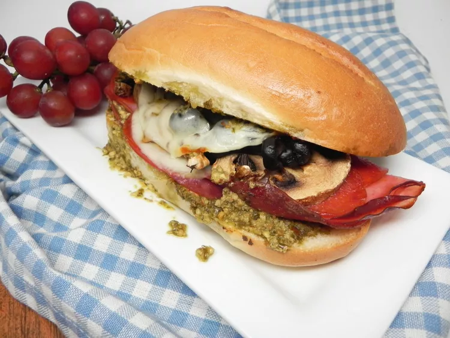

Salami, Ham, and Pepperoni Sandwiches in the Air Fryer

Description
This three-meat sandwich is crispy on the outside, tender and cheesy on the inside, with salami being the star of the show. Your air fryer crisps up the meat and toasts the bread at the same time and in only 5 minutes. Feel free to sub mozzarella cheese for the provolone.
Ingredients
- 2 fresh mushrooms, sliced
- 2 teaspoons basil pesto, divided
- 1 hoagie roll, split lengthwise
- 4 slices deli sliced Salami
- 2 slices deli ham
- 4 slices pepperoni
- 2 slices provolone cheese, divided
- 2 teaspoons sliced ripe black olives
Steps
- Place mushrooms in the basket of the air fryer. Set air fryer to 350 degrees F (175 degrees C) and cook mushroom slices for 5 minutes.
- Spread 1 tablespoon pesto onto the bottom half of the hoagie bun. Arrange salami slices over the pesto. Add ham and pepperoni.
- Place 1 slice of cheese over the ham and pepperoni. Top with mushrooms and olives. Add remaining slice of cheese. Spread remaining tablespoon of pesto on the other half of the bun and place on top to complete the sandwich.
- Place entire sandwich in the basket of the air fryer. Cook until cheese has melted and salami is crisp, about 5 minutes.